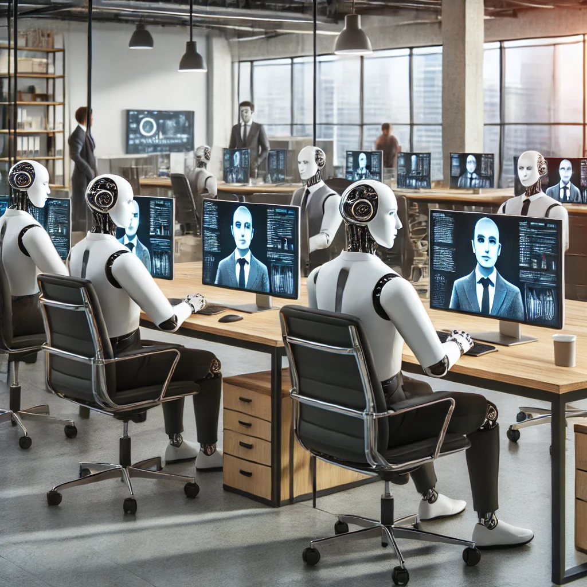

A simple introduction to machine learning
AI is not taking our jobs just yet
Published on 21st of March 2025

Image created by ChatGPT, OpenAI. 7th October 2024
Updated 31st of January 2025
Opinion Article
In recent months, there has been a lot of noise about the elimination of jobs due to advancements in Artificial Intelligence (AI). Some have even made catastrophic predictions, claiming that AI will lead to widespread unemployment, with machines replacing most of the workforce.
I don’t agree with these doomsday scenarios, and in this article, I’m going to explore why, in my opinion, this won’t be the case.
The Economy and AI
One of the first things we need to consider when discussing jobs is the economy. Despite all the technological advancements, we often forget how “analog” and rudimentary many aspects of the global economy remain.
Let me give you an example: coffee production. Do you know how coffee is harvested? During the harvest season, individual coffee cherries ripen at different rates. Skilled workers are needed to identify the perfect cherries by their deep red color, while leaving others to ripen further. This process is repeated several times over the harvest period.
Could AI and robots do this? In theory, yes. Image recognition technology might be able to identify ripe coffee cherries, and robots could be designed to navigate the terrain and pick the cherries manually. But the practical challenges are enormous. Consider the cost: Boston Dynamics' Spot robot costs around $75,000. Now, compare that to the profits from a small coffee farm that produces five bags of coffee per year—around $247 annually. It would take this small farmer over 300 years to pay off one robot. Even in a world where technological innovation reduces costs, it’s clear that employing humans is often more economically feasible.
The True Cost of AI in White-Collar Jobs
The common argument is that white-collar jobs are the ones that are more at risk now.” Let’s explore this.
White-collar jobs—such as psychologist, lawyers, medical professionals, or engineers require more than just following instructions or recognizing patterns.
Psychologists helps us understand our feelings. I have asked AIs about my feelings and surprisingly they are quite good at providing nuance answers and constructive ideas. Though improving everyday more the AI doesn't hold context for as long as a therapy program. For example during a long conversation an AI can remember your name, your projects, your current situation etcetera. But after a few times it might forget important information that you have already provided. A psychologist not only will remember the most relevant information, he will react empathically to you and he will also understand the social context where you live in. Is not the same to live in a fast urban metropolis than in a more isolated area where beliefs expectations and traditions are completely different. I know this might sound dumb but the psychologist does not need to be plugged to the internet he/she is analog.
Engineering is a vast area with different professions, but an interesting one is software engineering. Here I see a great aid for the job that is code generation and troubleshooting.
For the troubleshooting part I must say is a big help as you can give him , and I have tried this many times, a specific exceptions that some library may throw at you and it usually gives you the corret solution to your problem a huge time saver.
For the coding part though not perfect you can express an idea in words and the AI will produce code or a script that solves that problem. There is github copilot a tool that assists you in programming and has extensions, so you can use it with different code editors and developḿent tools. With AI assistance an inexperienced developer can write generic code faster or explore ideas where its personal knowledge might not be his strong point such as Audio Edition for giving a random example.
Is the job of developers at risk? I don't think so. First of all the programming languages have suffered many transformations throughtout the decades. We have passed from manipulating bits and bytes directly to assembly language to high- level languages to object oriented languages etcetera to AI. i see this is an evolution of language where our interactions with machines is more natural and we can express our needs in a more human friendly way, abstracting ourselves from the more low level details. Instead of twisting the human mind to fit the machine I see it as adapting the machine to the human. Yet besides what people might think the job of developer involves not only coding skills you also need skills to planify to work in teams you need at some points have good skills for communicating appropriately with workers that might not necessarily be tech savyy, an AI could help theoretically with the planning of a project but it still a human team the one responsible for taking it to good terms in the alloted time.
Okayl what about lawyers. An Ai can help draft a generic contract for a specific situation yet there still needs to be a human that knows about the law to verify that it is correct and that there are not prejudicial clauses and that it fits specifically to the case in hand. You wouldn't want to make an error that could cost thousands of dollars because the AI put a wrong condition in the contract. I still wonder how would an AI go to court to convince a jury or a judge.
How about a doctor. Can you imagine going to the doctor because you have a random pain and when you enter the practice all you see is a keyboard and some machines? Can you imagine reading a prompt such as please go to X machine and take your own blood pressure, cough in this sensor... What if you don't feel like typing much because you feel too sick? I could go on and on but the scene feels dystopic to me and I'm guessing that for many of you as well. I would definitely want that human attention. Doctors your job is safe and highly appreaciated.
Governments, Bureaucracy, and AI
Uff now let's look at a more controversial topic government. Wherever we live it is a fact that we have to interact with government bureacucracy one way or another. We might like it, we might despise it but it is there. Governments provide social services, collect taxes and try to promote social stability as well as to preserve themselves.
In this spirit of things governments might create or maintain positions that are not essential, but in this way preserving jobs and public organizations.
Since I am here in France I want to bring you an example, here in France banks still send credit cards and PIN codes separately by mail, even though other countries allow customers to set their codes instantly. On the surface, this seems inefficient. However, it serves to support public services like the postal system, and ensuring a certain level of personal security and privacy.
I believe that governments will be very wary of changing the status quo and replacing human counselors with chatbots for example, as this will contradict a goal of the government that is to reduce unemployment and the gains from replacing human workers with machines will seem minimal and will definitely anger voters.
Human Interaction as a Luxury
In our modern society I guess we underestimate the value of human interaction in our everyday life. As the saying goes "You don't know what you have until you lose it" we didn't know how much we needed each other until we started to interact with chatbots everywhere.
Let's talk about customer service, more often than not we find ourselves interacting with chatbvots for customer support. Some companies use them not only to reduce costs but as a way to exhaust customers that complain about bad service at minimal cost without solving their problems. Some others use them to guide users but when things get serious the chatbot has no authorization to solve a problem.
And here's another point I want to highlight and is responsability. A chatbot is not a person it cannot be held accountable for bad actions, you cannot sue a chatbot or put them in jail for disclosing company information. So if we're being sarcastic we might need humans just to have someone to blame when mistakes happen.
In amore serious tone it is true that jobs in this field have been reduced thanks to AI. Some profiles survive and what I like to believe is that when a client finally reach a human the reuirement is quite clear and the problem is not as obvious as you need to push the on button on your screen.
Human interaction is so valuable that in premium services in banks or trading houses the advice is personalized and with a human compared to the low cost options that can be 100% digital. We do appreaciate to be treated by others ideally if they treat us with respect. If you have the resources and want to make a big loan for building a factory in another country you definitely want and need to have oine or many human representatives from the bank side to interact with you, answer your questions. It makes me dizzy just to think that I would endebt myself millions of dollars at a time through a machine. I don't think this would be even legal in many jurisdictions.
What makes us human anyway
I have been using these systems for several months now, and after the initial hype let me tell you that I have found some important limitations. For example after creating several images with Dall-e I started to see a pattern in the style of the iamges it produc3s and I started to find them a little bit boring. I have started to see a lack of diversity in the images it uses. I talked about this in another article dalle3 user test.
I have also used them to ask questions about social life for example. My impression is that AI answers are usually very neutral and constructive. This was an intended feature to make a service that is friendly to everyone. Yet here there lies the problem as humans sometimes bad words are necessary. My native language is Spanish and part of the rich ness of the language is to use "bad words" to express different emotions and not necessarily as an insult. They can be used to create feelings of camaraderie, friendship, frustration, anger etcetera. A game's influencer I like to follow can say things like "Electronic Arts me cago en tu puta madre" to express unfairness towards something this company has done. This gives him a lot of charisma. Is also very important the entonation and the expression he has when he says this to make sure to express frustration more than anything and to connect with his audience. And this Ai fails again and again, nothing more boring than watching an AI youtube generated video which have become more common.
And this makes us pose ourselves questions aobut our own humanity. We humans have light and darkness, we are good and evil. We can lie, we can curse sometimes we can be manipulative and exploitative. And though we might nowt want to look at this darker side of the human experience is part of who we are as well. And AIs have been prevented to access this part of human psyche.
In this sense current policies have created AIs that have blind spots in their comprehension of human society, our society and this is a big gain for us. And also we must acknowledge that a big chunk of the world economy is sustained by these darker side of humanity.
Some negotiation practices can border on outright intimidation or even extorsion of the other party, corporate spionage and sabotage is a real thing. Bribes to politicians and regulatory bodies are a reality of our world. Some companies are profitable by working in unregulated markets or places where the laws are not fully applied, creating profits by not having safety standards. A modern AI would never recommend any of these practices, so quite ironically jobs that depend on not having a strong sense of morality are quite safe.
I have brought this darker side of humanity argument because it makes part of our intelligence and what we call intelligent bvehavior. And if the goal is to produce a General Artificial Intelligence putting a morality wall might prevent this goal.
AI in Specialized Fields
Not all is bad, there are fields where AI truly shines, there are tasks perfect for AI that are impossible or highly impractical for humans. One of those is weather forecasting, that involves processing massive amounts of data from thousands of sensors worldwide. Humans can't process this amount of data but an AI can.
Alpha go is another great example of succesful AI usage. Ais capable of predicting the structure of proteins for medical research for example. This modeling gives m
I bring these examples to show that there are areas where not only AI has not destroyed jobs but has created new ones propelling science and improving our understanding of the world.
Degradation of Salaries and working conditions
This, in my opinion, could be a more realistic outcome of the AI revolution. As AI helps automate some of the mechanical poarts of our jobs we might see a stagnation of salaries as some companies realize that they can go for AI for certain tasks and reduce their hiring efforts or focus on more junior roles. Also another possible outcome is that AI sets a new standard for what it is expected for a job role both in terms of quality and time to market.
Conclusion
What I like about AI is that it makes us question ourselves, about our own humanity. By interacting with AI for a while I have come to realize that though some parts of our job can be done by an AI faster it might not have the required quality for handing it out to the woeld. So maybe rather than fear it we can think of AI as a tool that can alleaviate ourselves from the mechanical burden of our jobs,to some extent, and focus on the more detailed specific elements of our jobs. We can think of it as a challenge to discover and expand our own humanity.
At the end of the day, as long as we value human creativity, empathy, and social interaction, we will remain irreplaceable. AI will continue to be a powerful tool, but it will not replace the complex, nuanced, and deeply human roles that define ourselves and shape our society.